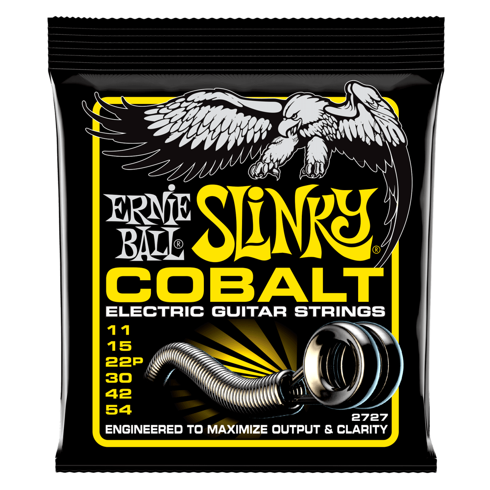

REGULAR SLINKY COBALT
Projetadas para maximizar a potência e clareza, as cordas para guitarra Ernie Ball Cobalt Slinky são a mais recente inovação em tecnologia de cordas. Proporcionando aos guitarristas uma nova voz, as cordas Cobalt proporcionam um alcance dinâmico prolongado, uma resposta harmônica incrível, um aumento de graves e agudos nítidos e claros. Cobalto fornece uma relação magnética mais forte entre captadores e cordas do que qualquer outra liga anteriormente disponível. Cobalto Slinkys também são macias e sedosas ao toque, facilitando o tocar. Bitolas .010, .013, .017, .026, .036, .046
Leia mais
